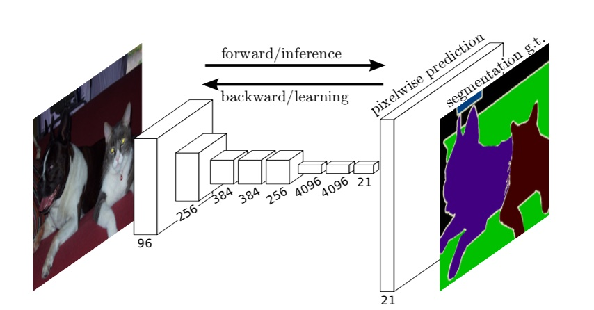
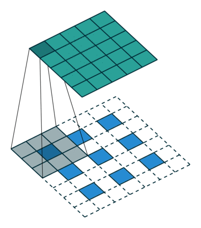

6.2 FCN（Fully Convolutional Networks for Semantic Segmentation ）
学习目标
- 目标
- 说明FCN的结构组成
- 掌握FCN的上采样方法以及skip layers
- 掌握FCNpatchwise training的训练方式
- 应用
- 无
6.2.1 FCN 背景介绍
图像语义分割：给定一张图片，对图片上每一个像素点进行分类！但是与图像分类目的不同，语义分割模型要具有像素级的密集预测能力才可以。
6.2.2 FCN介绍
6.2.2.1 全卷积网络
全卷积网络，模型由卷积层、池化层组成（没有全连接层），可以接受任意大小的输入，网络的示意图如下

过程：输入一张图片，网络由浅到深，随着卷积层和池化层不断作用，产生的特征图分辨率越来越小，但是通道数会越来越多。最后通过逐层上采样得到一个和输入形状一样的结果。

- 输入可为任意尺寸图像彩色图像；输出与输入尺寸相同，深度为：20类目标+背景=21（VOC分类）
1、结构修改，保证任意图像对应输入输出
典型的识别网络，包括LeNet、AlexNet，表面上采用固定大小的输入并产生非空间输出。 这些网全连接的层具有固定的尺寸并丢弃空间坐标。 然而，这些完全连接的层也可以被视为与覆盖整个输入区域的内核的卷积。
一般图像分类CNN网络在最后一层卷积层后会跟若干个全连接层, 将卷积层产生的特征图映射成一个固定长度的特征向量。论文中的例子：输入一张猫的图片, 经过CNN网络, 得到一个长为1000的输出向量, 这个向量经过softmax归一化，分别对应1000个类别的概率，这样我们可以得到输入图像属于每一类的概率, 在下例中我们可以看出图像属于"tabby cat"这一类可能性最大。

这篇论文里面是将全连接层转化为卷积层。上图中我们可以看出FCN将最后3层转换为卷积层，卷积核的大小(通道数，宽，高)分别为（4096,1,1）、（4096,1,1）、（1000,1,1）。
全连接层怎么转成卷积层：拿上图为例，最后一层卷积层的输出为7 x 7 x 256 。后面再接三个全连接层变为(1,4096),(1,4096),(1,1000)（一维向量）。我们可以把这三个全连接层变为卷积层。
变换方式：
针对FC1 ，选卷积核K=7卷积，输出为1 x 1 x 4096。
针对FC2，选卷积核K=1卷积，输出为1 x 1 x 4096。
对最后一个FC3，选卷积核k=1卷积，输出为1x1x1000。
这样转换后的网络输出的就是一个热力图 ,这个图明显二维的。这样转换后的网络输出的就是一个热力图 ,这个图明显二维的。
2、上采样得到预测映射（dense prediction）的策略
我们可以看出
- 1、对原图像进行卷积conv1, pool1后原图像缩小为1/2；
- 2、之后对图像进行第二次conv2,pool2后图像缩小为1/4；
- 3、对图像进行第三次卷积操作conv2,pool3缩小为原图像的1/8, 此时保留pool3的feature map；
- 4、继续对图像进行第四次卷积操作conv4，pool4，缩小为原图像的1/16，保留 pool4的feature map；
- 5、最后对图像进行第五次卷积操作conv5,pool5，缩小为原图像的1/32
- 6、然后把原来CNN操作中的全连接变成卷积操作 conv6，图像的feature map 数量改变但是图像大小依然为原图的1/32，此时图像heatmap（热力图）。
最后的输出是1000张heatmap经过upsampling变为原图大小的图片，为了对每个像素进行分类预测label成最后已经进行语义分割的图像

论文作者研究过3种方案实现dense prediction：反卷积法以及(移针法（shift-and-stitch）、稀疏滤波（filter rarefaction））
（1）反卷积法（deconvolutional）
注：反卷积（Deconvolution），当然关于这个名字不同框架不同，Caffe和Kera里叫Deconvolution，而tensorflow里叫Conv2DTranspose。叫conv_transpose更为合适。
反卷积（转置卷积）：反卷积是一种特殊的正向卷积，先按照一定的比例通过补0来扩大输入图像的尺寸，接着卷积核卷积，再进行正向卷积。
- 1、先进行上采样，即扩大像素；再进行卷积
卷基的forward、backward操作对调，就是转置卷积。
卷积与转置卷积的本质就是进行了矩阵运算，从矩阵角度理解
理解：然后把普通卷积的输出作为转置卷积的输入，而转置卷积的输出，就是普通卷积的输入，常用于CNN中对特征图进行上采样，比如语义分割和超分辨率任务中。
- 卷积与转置卷积的可视化计算过程
公式：设反卷积的输入是 ，反卷积的输出为 , 。
那么此时反卷积的输出就为：，反过来就是n = (m+2p -k)/s + 1
例子理解：
下图中蓝色是反卷积层的input，绿色是反卷积层的output，元素内和外圈都补0的转置卷积。

举个例子：选择一个输入input尺寸为$3 3$ ，卷积核kernel 尺寸为$3 3$ ，步长strides=2，填充padding=1 ，即n=3,k=3,s=2,p=1，则输出output的尺寸为m=2x(3-1) +3=5 。
问题：怎么使反卷积的output大小和输入图片大小一致，从而得到pixel level prediction？
因为FCN里面全部都是卷积层（pooling也看成卷积），卷积层不关心input的大小，inputsize和outputsize之间存在线性关系。
假设图片输入为n×n大小，第一个卷积层输出map就为conv1_out.size=(n-kernelsize)/stride + 1,记做conv1_out.size = f(n), 依次类推，conv5_out.size = f(conv5_in.size) = f(... f(n)), 反卷积是要使n = f‘(conv5_out.size)成立，要确定f’，就需要设置deconvolution层的kernelsize，stride，padding。
TensorFlow 中tf.keras.layers.Conv2DTranspose
tf.keras.layers.Conv2DTranspose(
filters, kernel_size, strides=(1, 1), padding='valid', output_padding=None,
data_format=None, dilation_rate=(1, 1), activation=None, use_bias=True,
kernel_initializer='glorot_uniform', bias_initializer='zeros',
kernel_regularizer=None, bias_regularizer=None, activity_regularizer=None,
kernel_constraint=None, bias_constraint=None, **kwargs
)
参数：
1、filters：整数，输出空间的维数（即卷积中输出过滤器的数量）。
2、kernel_size：2个整数的整数或元组/列表，指定2D卷积窗口的高度和宽度。可以是单个整数，以为所有空间尺寸指定相同的值。
4、strides：一个整数或2个整数的元组/列表，指定沿高度和宽度的卷积步幅。可以是单个整数，以为所有空间尺寸指定相同的值。指定任何跨步值！= 1与指定任何dilation_rate值！= 1 不兼容。
5、padding："valid"或之一"same"（不区分大小写）。
6、output_padding：一个整数或2个整数的元组/列表，指定沿输出张量的高度和宽度的填充量。可以是单个整数，以为所有空间尺寸指定相同的值。沿给定尺寸的输出填充量必须小于沿相同尺寸的步幅。如果设置为None（默认），则推断输出形状。
7、data_format：字符串，channels_last（默认）或之一channels_first。输入中尺寸的顺序。
8、channels_last对应于具有形状的输入， (batch, height, width, channels)而channels_first 对应于具有形状的输入 (batch, channels, height, width)。默认为image_data_format在Keras配置文件中找到的值~/.keras/keras.json。如果您从未设置，那么它将是“ channels_last”。
9、dilation_rate：一个整数或2个整数的元组/列表，指定用于扩张卷积的扩张率。可以是单个整数，以为所有空间尺寸指定相同的值。当前，指定任何dilation_rate值！= 1与指定任何步幅值！= 1不兼容。
10、activation：要使用的激活功能。如果您未指定任何内容，则不会应用任何激活（即“线性”激活：）a(x) = x。
11、use_bias：布尔值，层是否使用偏置向量。
12、kernel_initializer：kernel权重矩阵的初始化程序。
13、bias_initializer：偏置矢量的初始化器。
其他方法如下：
（2）移针法（shift-and-stitch）
对于移针法，设原图与FCN所得输出图之间的降采样因子是f，那么对于原图的每个f的区域（不重叠），“shift the input x pixels to the right and y pixels down for every (x,y) ,0 < x,y < f." 把这个f区域对应的output作为此时区域中心点像素对应的output，这样就对每个f的区域得到了f^2个output，也就是每个像素都能对应一个output，所以成为了dense prediction。（3）稀疏滤波
就是放大CNN网络中的下采样层的滤波器尺寸，得到新的滤波方法。
其中s是下采样的滑动步长，这个新滤波器的滑动步长要设为1，这样的话，下采样就没有缩小图像尺寸，最后可以得到dense prediction。
以上两种方法作者都没有采用，主要是因为这两种方法都是经过折中（trade-off）的。
对于移针法， 下采样的功能被减弱，使得更细节的信息能被filter看到，但是其感受野会相对变小，可能会损失全局信息，且会对卷积层引入更多运算。
对于稀疏滤波，虽然receptive fileds没有变小，但是由于原图被划分成f*f的区域输入网络，使得filters无法感受更精细的信息。

6.2.2.2 skip layers实现fusion prediction
作者在试验中发现，得到的分割结果比较粗糙，所以考虑加入更多前层的细节信息，也就是把倒数第几层的输出和最后的输出做一个fusion，实际上也就是加和，过程如下，一共有三种方式：

- 第一种方法对所得特征图像直接进行32倍的上采样，被称为FCN-32s，处理方法简单迅速，但是其采样预测结果的边缘信息比较模糊，无法表现得更具体。
- 第二种方法提出了层跨越（skip layers）的思路，即特征图像进行2倍的上采样后，将其结果与第四层池化操作后的结果相迭加，之后再对结果进行16倍上采样，最终获得采样预测，即FCN-16s。
- 其将低层的fine layer与高层的coarse layer进行结合，兼顾了局部信息与全局信息，对像素的空间判别与语义判别进行了很好的折中处理。相较FCN-32s，FCN-16s所获得的采样预测不管是从预测结果还是网络结构来说显然都更加优秀。
- 第三种方法则是在FCN-16s的基础上，进行了与第三层池化操作后的结果相迭加，再对结果进行8倍上采样的FCN-8s。显然，其生成的语义标签图像是三种情况中最好的。
最终：在逐层fusion的过程中，做到第三层再往下，结果又会变差，所以作者做到这里就停了。

6.2.2.3 patch-wise training in FCN
1、损失计算
upsample之后，网络输出是与origin image大小相同，channel数为C+1的每个pixel的分类预测，其中C表示分类数量（如Pascal voc数据集，则C=20），对空间每个pixel 做softmax分类预测，那么易知损失函数为。
其中x为最后一层的输出（3-D），记origin image 大小为h x w，那么x大小为(C+1) x h x w。每个pixel都是一个softmax 分类预测。
2、训练
一般对于语义分割的训练，学术界有两种办法： Patchwise training 和类别损失加权的方法来进行训练。
- 类别损失加权: 根据类别数量的分布比例对各自的损失函数进行加权，比如有些样本的数量较少，我就给它的损失函数比重增大一些。
- 分批训练： 旨在避免完整图像训练的冗余。
- 定义：patchwise training是指对每一个感兴趣的像素，以它为中心取一个patch，然后输入网络，输出则为该像素的标签，训练时就将一个个patch组成一个batch作为网络输入。由于patches可能高度重叠，所以需要一些sampling方法对选取一些patches作为训练集
- 避免完全图像训练的冗余，在语义分割中，假设你在对图像中的每个像素进行分类，通过使用整个图像，你在输入中添加了大量的冗余。在训练分割网络中避免这种情况的一种标准方法是从训练集而不是完整的图像中向网络提供批量的随机patches(围绕感兴趣的对象的小图像区域)。
- 从另一种角度出发，我们也可以使得这些补丁区域尽量减少背景信息，从而缓解类别不均衡问题。
作者根据实验结果给出结论：补丁式训练完全没有必要，训练 FCN 还是输入整张图片比较好。并且解决这种类别不均衡的问题，只需要给损失函数按比例加权重就行。
6.2.2.4 训练细节
- 第一阶段

以经典的分类网络为初始化。最后两级是全连接（红色），参数弃去不用。
- 第二阶段

从特征小图（16x16x4096）预测分割小图（161621），之后直接升采样为大图。 反卷积（橙色）的步长为32，这个网络称为FCN-32s。 这一阶段作者使用单GPU训练约需3天。
- 第三阶段

上采样分为两次完成（橙色×2）。 在第二次上采样前，把第4个pooling层（绿色）的预测结果（蓝色）融合进来。使用跳级结构提升精确性。 第二次反卷积步长为16，这个网络称为FCN-16s。 这一阶段作者使用单GPU训练约需1天。
- 第四阶段

上采样分为三次完成（橙色×3）。 进一步融合了第3个pooling层的预测结果。 第三次反卷积步长为8，记为FCN-8s。 这一阶段作者使用单GPU训练约需1天。
- 论文中优化利用momentum训练了GSD。 对于FCN-AlexNet，FCN-VGG16和FCN-GoogLeNet，使用20个图像的小批量大小和0.001,0.0001和0.00005的固定学习速率。
通过反向传播通过整个网络对所有层进行微调。 考虑到学习基本分类网络所需的时间，单独对输出分类器单独进行微调只能获得完整微调性能的70％，因此从头开始进行训练是不可行的。 （VGG网络是分阶段训练的，从完整的16层初始化后进行训练)。对于的FCN-32s，在单GPU上，微调要花费三天的时间，而且大约每隔一天就要更新到FCN-16s和FCN-8s版本。

图中对比了patch取样，全图有效地训练每张图片batches到常规的、大的、重叠的patches网格。采样在收敛速率上没有很显著的效果相对于全图式训练，但是由于每个每个批次都需要大量的图像，很明显的需要花费更多的时间。
6.2.2.5 评价指标
论文中实验了四种评价指标：

其中表示分类数量（包括背景这一分类），表示真实分类为 i 的所有pixels数量，所以
1、pixel accuracy 表示总分类正确率，即所有分类正确的pixels数量占 全体 pixels的比例。
2、mean accuracy表示平均分类正确率，即每个分类的正确率的均值值，某个真实分类
i的正确率为，预测分类为i的pixels数量占 所有真实分类为i的pixels数量的比例。3、mean IU 表示 对所有分类的 IU 值取平均。分类为
i的IU值- 分子是分类预测为
i的pixels数量，分母是 真实分类为i的所有pixels数量与所有真实分类不是i但是预测分类为i的pixels数量之和。其实就相当于 region IOU，只不过是以pixel数量计算，而非region 面积。
- 分子是分类预测为
4、frequency weighted IU 表示各分类的IU 加权平均。加权是为了突出某些分类的重要性。当$t_{k}$均为1 时，就变成了 mean IU。
6.2.3 分割架构效果
最终分割通过在ILSVRC12的AlexNet3体系结构，以及在ILSVRC14中的VGG网络和GoogLeNet4做的很不错。
通过丢弃最终的分类器层来斩断每个网络的开始，并将所有的全连接层转换为卷积。下面在PASCAL VOC 2011 数据集中，NVIDIA Tesla K40c上对500×500输入进行20次试验的平均值）的比较

- 不同的FCN的skip效果比较

- 其它效果
- FCN-8s is the best in Pascal VOC 2011.
- FCN-16s is the best in NYUDv2.
- FCN-16s is the best in SIFT Flow.
缺点
得到的结果还是不够精细。进行8倍上采样虽然比32倍的效果好了很多，但是上采样的结果还是比较模糊和平滑，对图像中的细节不敏感
对各个像素进行分类，没有充分考虑像素与像素之间的关系。忽略了在通常的基于像素分类的分割方法中使用的空间规整（spatial regularization）步骤，缺乏空间一致性

6.2.4 网络结构总结
- 全卷积（convolutional）：采样端对端的卷积网络，将普通分类网络的全连接层换上对应的卷积层（FCN）
- 上采样(upsample)：即反卷积（deconvolution），恢复图片的位置信息等，反卷积层可以通过最小化误差学习得到。
- 跳跃连接(skip layer)：通过连接不同卷积层的输出到反卷积层，来改善上采样很粗糙的问题。
6.2.5 总结
- FCN的结构组成
- FCN的上采样方法以及skip layers
- FCN training的训练过程以及训练方式